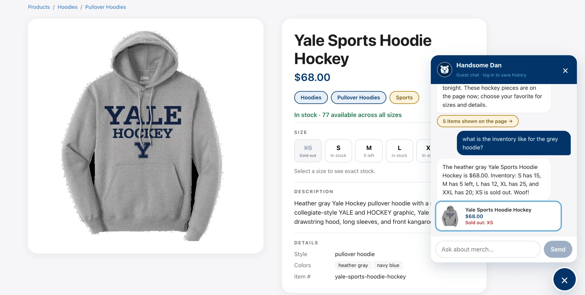

1
Checking sizes from the chat
Pass
What was tested
Asking the chatbot about sizes and stock. I asked several questions and was deliberately vague. The last one was just "what is the inventory like for the grey hoodie?"
Result
It did a great job. Even with vague wording it worked out which product I meant (the heather-gray hockey hoodie), gave the price and stock for every size, and called out the sold-out size clearly. The product card in the chat repeats it in red ("Sold out: XS") and links to the product page.
Checked against the database
| Chat said | Database | ||
|---|---|---|---|
| Price | $68.00 | 68.0 | ✓ |
| S / M / L | 15 / 5 left / 12 | 15 / 5 / 12 | ✓ |
| XL / XXL | 25 / 20 | 25 / 20 | ✓ |
| XS | Sold out | 0 | ✓ |
| Color | "heather gray" | ["heather gray", "navy blue"] | ✓ |
The chat's numbers also match the size buttons on the page (XS crossed out, M "5 left"), so the page and the chat agree.